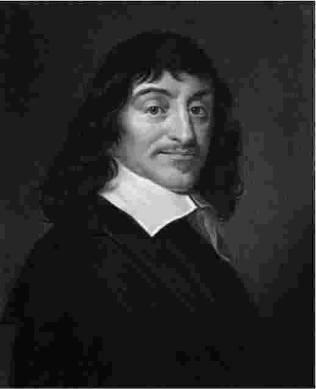

勒内·笛卡尔的职业生涯不长，起步也晚。1628年他才开始专注地研究哲学和自然科学，此时他已三十二岁了；九年以后他才有作品问世，而这距他生前最后一部著作的出版时间（1649年）仅有十二年。他也远非多产的作者。然而，他为物理学 [2] 、数学和光学作出了奠基性的贡献；在气象学和生理学等领域，他所留下的记录也惠及后人。他在自然科学方面的成就已经令人景仰，但他的视野却远更辽阔。
他最为人知的方面或许是“我思故我在 [3] ”（Cogito，ergo sum）这句名言。这个简短的论断是他的形而上学（或者说“第一哲学”）的第一原则，这种哲学致力于探讨坚实严谨的科学赖以存在的先决条件。他的形而上学非常玄奥，对后世哲学影响深远，直至今日仍不绝，堪称他思想遗产中最具生命力的部分。但是笛卡尔的初衷绝不是让形而上学独立于科学研究而存在，更不是让它喧宾夺主。当笛卡尔在研究活跃期的前半段转向形而上学时，他发明的理论仅仅是为阐述自己以数学为基础的物理学扫清障碍。通过极其抽象复杂的推理，笛卡尔力图证明，只有那些能够在几何学中清晰理解的属性——长、宽、高——才是物质最核心的属性，解释自然现象也只需要考虑这些几何属性和物质的运动。
几何式物理学的鼓吹者不止笛卡尔一位，他甚至也不是头一位。这个大方向的先驱当推伽利略 [4] ，但笛卡尔认为他不够严谨。“他还没打地基就开始盖楼了，”笛卡尔在1638年10月的一封信中如此评价伽利略，“他没有考虑自然的第一因，只试图解释一些个别现象。”（2.380）笛卡尔的形而上学则考虑了自然的第一因——上帝；他的物理学由此推演出自然界最普遍现象——这些现象包括加速以及物体因碰撞而发生的变形——的原因并就其他许多现象的成因提出了假设。
他有意采用了一种同时远离经验常识和传统物理学的解释方式：该方式似乎无意与自然物体向人类感官所呈现的表象保持一致。搭建笛卡尔物理学的材料是关于物体的数学事实，诸如关于大小、形状、构成、速度的数据，这些事实能够为感官经验迥异于我们或者完全没有感官经验的心智 [5] 所把握。物体的其他事实，诸如颜色、气味等原本 与人类感觉能力有关的事实，笛卡尔是以另外的方式处理的。他用自己偏爱的框架来解释，将它们都归结为物体的大小、形状、速度以及这些事实对感官的影响。由此，笛卡尔创立了一种理论，区分了物体真实拥有的本质属性（形状、大小等等）与物体似乎拥有的表象属性（颜色、气味及其他能感知的特性）。

图1 一幅笛卡尔肖像的版画复制品（原作者：弗兰斯·哈尔斯）
笛卡尔区分了以感觉为基础的认知框架和更严格的数学式认知框架，坚信后者能更客观地理解物质世界。新科学的其他信徒也秉持这样的看法。为了宣扬数学式认知框架的优越性，他们有时会声称它与上帝的思维相似。但是笛卡尔没有满足于这种上帝视角的含混提法，他明确指出了在理解物质世界时以感觉为基础的认知框架与数学式认知框架之间的差异。他向读者表明，前者的整个体系都难逃质疑，后者却可以驱逐不确定性的幽灵；不仅如此，他还提出了一种方法，帮助我们摆脱感觉的影响，转向更客观的认知框架。
通过亲自倡导上述方法，笛卡尔在纯数学和自然科学的几个分支领域都取得了斐然的成就。其他作者，例如弗朗西斯·培根 [6] 和伽利略，只能在某些方面与笛卡尔比肩。培根虽然发明了一种消除常识化认知和传统物理学负面影响的方法，他对感觉世界的质疑却远不如笛卡尔深刻。此外，培根虽然为一种更客观的认知自然的模式开辟了空间，他却没有清楚地意识到这种模式的数学本质。伽利略的确意识到了该模式的数学本质，却不能令人信服地解释数学方法在研究物理世界时何以能被应用得如此得心应手。笛卡尔的形而上学填补了这个空白。他的理论宣称，按照上帝设计的本意，如果人类的心智以数学的方式去理解物质世界，就能进入确信无疑的状态；我们能够确信无疑地理解的任何东西，上帝都有能力创造出来；当人类确信不疑地把握到物质的数学本性时，仁慈的上帝是不会让他们的心智在此刻坠入谬误的。
这套将物质与数学视为“天生伉俪”的说法在我们今日看来既显怪诞，也不够雄辩。然而，即使笛卡尔没能说服我们数学式物理学是可行的，也没有什么妨碍。17世纪以来数学式物理作为测量、预测和控制的工具已然取得辉煌成就，让诸如此类的证明成为多余。但笛卡尔的理论并非徒劳无功，它为早期的一些研究铺平了道路，正是这些研究的成就使我们树立了对现代物质科学的信心。
如今笛卡尔的形而上学比他的数学式物理学更受关注，因为去世不过数十年，他在自然科学领域最具特色的一些猜想就被逐渐淘汰了。然而，这些理论的研究和撰写工作却几乎占据了他的整个活跃期。科学问题，而不是哲学问题，才是他研究工作的中心。在面对这些问题时，他强烈地意识到它们的共同点，清楚地知道处理它们的顺序，并且坚信自己能够找到其中多数问题的答案。